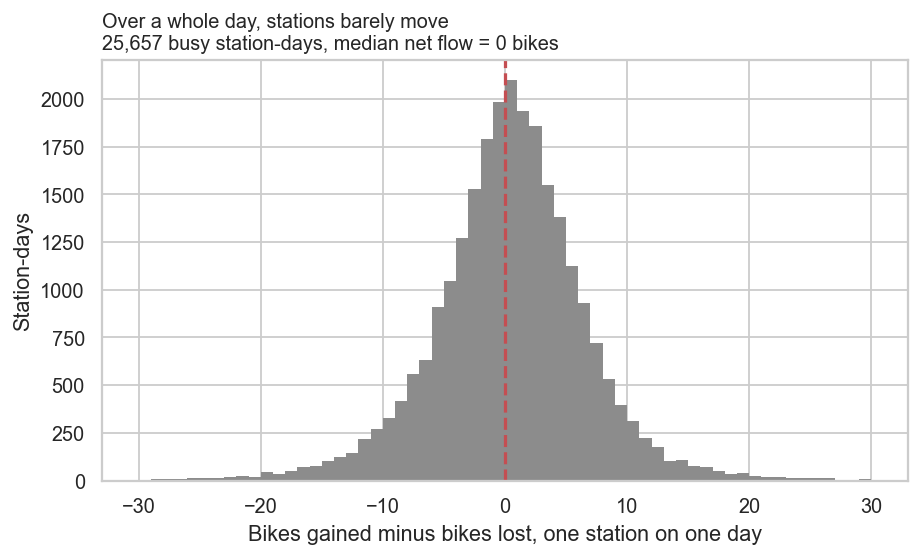
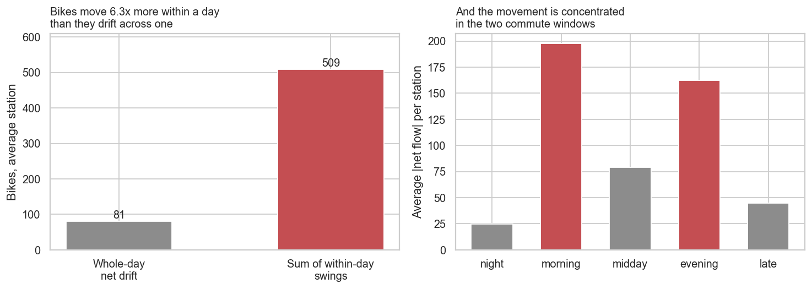
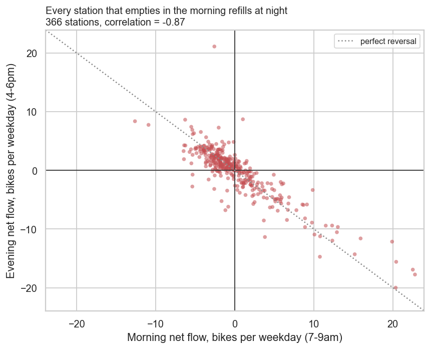
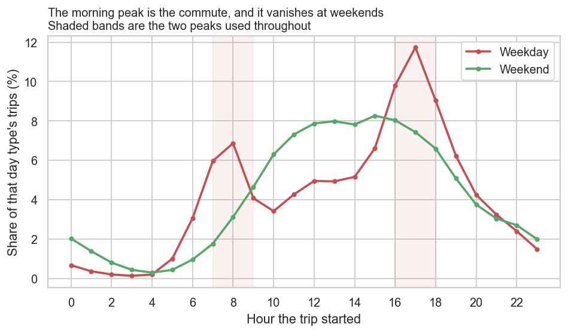
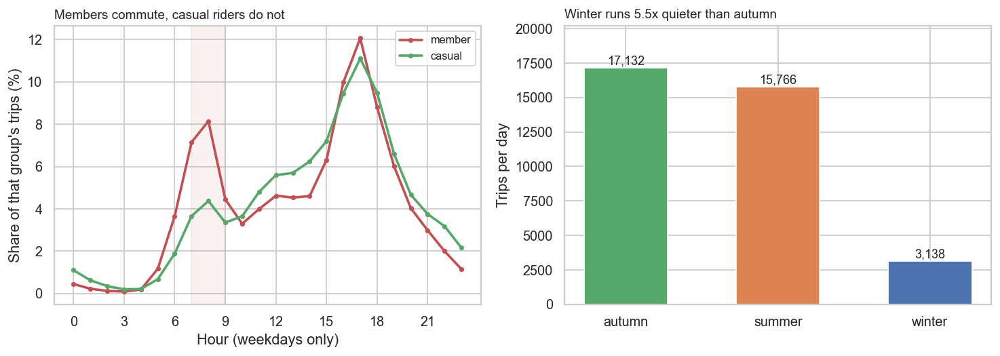
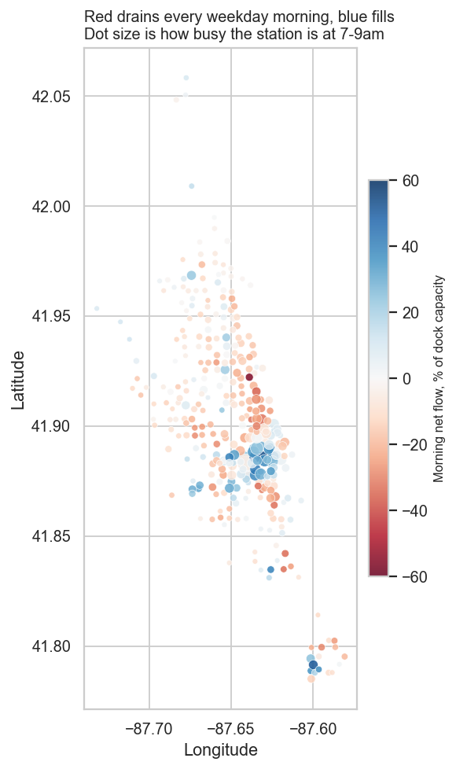

Chicago Bike-Share Rebalancing
1,670,686 Divvy trips across three seasons, joined to the dock capacity of every station, to answer where the rebalancing vans should go. The obvious metric turns out to be genuinely empty — the median station nets zero bikes over a full day. Bikes move 6.3× more within a day than across one, so rebalancing is a timing problem, not a volume one.
The brief
Where should the rebalancing vans go, and when?
Bike-share systems drift out of balance: riders take bikes from one place and leave them in another, and an operator runs vans to move them back. The operational question is which stations to visit and at what hour.
The obvious answer is to find the stations that lose the most bikes per day and send vans there. That is the answer this project set out to produce, and the first measurement killed it.
| Month | Season | Trips |
|---|---|---|
| June 2024 | Summer | 710,721 |
| September 2024 | Autumn | 821,276 |
| January 2025 | Winter | 138,689 |
| Total | 1,670,686 |
Data quality
1 The missing station names are not missing data
356,027 trips (21.3%) have no start station name. The first instinct is to treat that as broken data and drop it. That would have been wrong.
Splitting the null rate by bike type explains it immediately:
| Bike type | Trips with no start station |
|---|---|
classic_bike | 0.0% |
electric_bike | 35.0% |
electric_scooter | 46.9% |
Classic bikes have to be locked into a dock, so they never lack a station. E-bikes and scooters can be left at the kerb, so they often do. A third of trips have no station because the vehicles are dockless by design, not because the data is broken.
This matters because rebalancing is a question about docks. Only 1,132,800 trips (67.8%) start and end at a dock, and those are the only ones that move a bike from one dock to another. Every station-level number in this project is computed on that subset — 1,120,275 trips after the validity flags below — and the rest stay in the table so the size of what was set aside remains visible.
2 Trips that are not really trips
| Check | Trips | Treatment |
|---|---|---|
| Same dock, under 2 minutes | 12,043 | Flagged as failed docking, excluded from rates |
| Under 1 minute | 40,744 | Flagged, excluded |
| Over 24 hours | 2,031 | Flagged, excluded |
| Negative duration | 0 | None found |
| Coordinates outside Chicago | 23 | Distance left null |
| Missing coordinates | 1,938 | Distance left null |
Duplicate ride_id | 0 | — |
The failed dockings are the interesting one. A trip that starts and ends at the same dock inside two minutes is someone pulling a bike out and pushing it straight back, usually because it is broken. Counted as trips, they inflate a station's turnover without a bike ever going anywhere.
3 Dock capacity comes from a live feed
1,517 of 1,627 stations in the trip data could be matched to a capacity in the GBFS feed. The mismatch is expected: the feed is live and describes the network today, while the trips run from June 2024 to January 2025, and stations get added, retired and renamed in between.
Unmatched stations keep a null capacity rather than a guessed one, and every capacity-relative figure skips them and states how many it skipped.
Findings
4 The number I expected to use is useless
The obvious first measurement is each station's net flow over a day: bikes arriving minus bikes leaving. If a station keeps losing bikes, send a van.

| Whole-day net flow, across 25,657 station-days | Value |
|---|---|
| Median | 0 bikes |
| Mean | −0.02 bikes |
| Station-days where net movement is within 10% of turnover | 72% |
For 72% of station-days, almost everything that leaves comes back. That is not a small effect that needs a better test — it is the signal being genuinely absent, and accepting that rather than assuming something had been grouped wrong took a while.
5 The movement is all inside the day
Splitting the day into five windows and measuring net flow in each one tells a completely different story:

| Measure | Bikes, average station |
|---|---|
| Whole-day net drift | 81 |
| Sum of the within-day swings | 509 |
And the swings are not spread through the day. They sit in the two commute windows:
| Window | Average size of net flow |
|---|---|
| Night | 25 |
| Morning | 197 |
| Midday | 79 |
| Evening | 162 |
| Late | 45 |
6 Morning and evening are the same trip, reversed
Across the 366 busiest stations, morning net flow and evening net flow correlate at −0.87.

A correlation that strong and that negative means the two peaks are one movement seen twice: the bikes that leave a residential street at eight in the morning are the same bikes coming back at six. Nothing needs trucking overnight, because the riders do the rebalancing themselves on the way home.
On weekdays trips peak at 17:00 with a second bump at 08:00; at weekends the morning peak simply is not there. Members take 19.7% of their weekday trips in the 7–9am window against 11.4% for casual riders, and casual trips run 1.5× longer at the median. One group is going to work; the other is going for a ride.


7 Winter is a different network
| Season | Trips per day | Median trip |
|---|---|---|
| Autumn | 17,132 | 10.3 min |
| Summer | 15,766 | 11.9 min |
| Winter | 3,138 | 7.1 min |
January runs 5.5× quieter than autumn, and the trips that do happen are shorter. Whatever van schedule comes out of this cannot be a single fixed rota — the peak it is chasing is several times smaller for a third of the year.
So which stations actually need a van
Measured against the station's own docks, not against raw volume
The right measurement is the morning swing as a share of the station's own dock capacity. Four bikes is nothing at a fifty-dock station and is most of a seven-dock one. Over 66 weekdays:

Empties every morning — van should arrive before 7am
| Station | Bikes lost per weekday | Docks | Share of capacity |
|---|---|---|---|
| Sedgwick St & Webster Ave | −3.9 | 7 | −56% |
| Clark St & Lincoln Ave | −5.4 | 15 | −36% |
| Wells St & Polk St | −6.5 | 19 | −34% |
| MLK Jr Dr & 29th St | −6.4 | 19 | −34% |
| Calumet Ave & 33rd St | −3.7 | 11 | −33% |
| Michigan Ave & 14th St | −6.3 | 19 | −33% |
Fills every morning — docks run out for arriving riders
| Station | Bikes gained per weekday | Docks | Share of capacity |
|---|---|---|---|
| Clark St & Lake St | +12.9 | 24 | +54% |
| University Ave & 57th St | +15.9 | 31 | +51% |
| Franklin St & Lake St | +19.9 | 40 | +50% |
| Franklin St & Monroe St | +20.4 | 48 | +43% |
| Sangamon St & Lake St | +9.8 | 24 | +41% |
| State St & 33rd St | +6.1 | 15 | +41% |
Sedgwick St & Webster Ave is the clearest case: it loses 3.9 bikes on an average weekday morning from only 7 docks, so more than half the station empties before nine. Ranked on raw bikes lost it would not appear anywhere near the top of the list, because a small station cannot lose many bikes in absolute terms.
The fills are the mirror image and are just as much of a problem, for the opposite reason: a rider arriving downtown at half past eight finds no free dock and has to keep riding.
The SQL layer
8 queries over a SQLite build of the trip table
A trip touches two stations, so every station-level measure starts by unpivoting each trip into a departure row and an arrival row with UNION ALL. This is the query for the metric that turned out to be empty — and it is kept in the repository precisely because the null result is the finding:
-- Q2. Whole-day net flow per station -- The measurement I expected to build the answer on. Bikes in minus bikes out, -- per station per day. The point of the query is that the answer is ~0. WITH daily AS ( SELECT station, start_date, SUM(arrived) AS arrivals, SUM(departed) AS departures FROM ( SELECT start_station_name AS station, start_date, 0 AS arrived, 1 AS departed FROM trips WHERE dock_to_dock = 1 AND usable = 1 UNION ALL SELECT end_station_name AS station, start_date, 1 AS arrived, 0 AS departed FROM trips WHERE dock_to_dock = 1 AND usable = 1 ) GROUP BY station, start_date ) SELECT COUNT(*) AS station_days, ROUND(AVG(arrivals - departures), 3) AS mean_net, ROUND(AVG(ABS(arrivals - departures)), 2) AS mean_abs_net, ROUND(AVG(arrivals + departures), 1) AS mean_turnover, ROUND(100.0 * SUM(CASE WHEN ABS(arrivals - departures) <= 0.10 * (arrivals + departures) THEN 1 ELSE 0 END) / COUNT(*), 1) AS pct_within_10pct FROM daily;
Reporting mean_net and mean_abs_net side by side is what makes the emptiness legible: the signed mean is −0.02 while the absolute mean is not small, so the movement exists and simply cancels.
The operational query adds the hour and weekday filters and divides through by dock capacity — which is the step that changes the ranking entirely:
-- Q4. The stations that empty every weekday morning, ranked by capacity -- Ranked on share of docks rather than raw bikes, because a seven-dock station -- cannot lose many bikes in absolute terms and would never surface in a -- volume ranking. WITH morning AS ( SELECT station, SUM(arrived) - SUM(departed) AS net, SUM(arrived) + SUM(departed) AS turnover FROM ( SELECT start_station_name AS station, 0 AS arrived, 1 AS departed FROM trips WHERE dock_to_dock = 1 AND usable = 1 AND is_weekend = 0 AND start_hour BETWEEN 7 AND 9 UNION ALL SELECT end_station_name AS station, 1 AS arrived, 0 AS departed FROM trips WHERE dock_to_dock = 1 AND usable = 1 AND is_weekend = 0 AND start_hour BETWEEN 7 AND 9 ) GROUP BY station ), weekdays AS ( SELECT COUNT(DISTINCT start_date) AS n FROM trips WHERE is_weekend = 0 ) SELECT m.station, ... -- net per weekday, docks, and net as a share of capacity
The usable = 1 predicate is doing quiet work throughout: failed dockings and sub-minute trips are flagged rather than deleted, so they never inflate a station's turnover here while remaining available for the data-quality report.
Recommendations
What I would actually recommend
- Dispatch against the morning swing as a share of capacity, not against daily net flow. Daily net flow is close to zero everywhere and ranks stations by how busy they are rather than how stranded they get.
- Move vans before 7am, not overnight. The evening commute already returns the bikes for free. Anything trucked at 2am is work the riders were going to do anyway.
- Watch the small stations. The worst cases by share of capacity are stations with 7 to 19 docks that never appear in a raw-volume ranking.
- Run a separate winter schedule. Five times fewer trips is not a smaller version of the same problem.
Limitations
- Only 68% of trips start and end at a dock. E-bikes and scooters left on the pavement are a real part of the network and none of the station numbers here see them.
- Dock capacity describes the network today, not the months analysed. 27 of the 366 busiest stations could not be matched and are left out of the capacity tables.
- Flows are visible; standing inventory is not. I never see the actual number of bikes at a station, only movements in and out. A station that empties may have started the morning full. Proving that a station truly ran dry needs the live availability feed sampled over time, which is a different project.
- Three months, not a full year. Enough to establish that the seasonal difference is large, not enough to build a twelve-month rota.